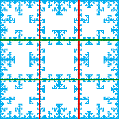

|  |
| Note the vertical lines at x = 1/3 and
x = 2/3. |
| Next, note the horizontal lines at y = 1/3 and
y = 2/3. |
| These lines were discussed in lines whose endpoints belong to 2-cycles. |
| For example, the horzontal lines have endpoints |
| (31)infinity | | (42)infinity |
| (13)infinity | | (24)infinity |
|
| and are generated by allowing the transitions |
| 3 → 1, 4 → 1, 3 → 2, 4 → 2,
1 → 3, 2 → 3, 1 → 4, and 2 → 4. |
| From our study of which 2-step memory configurations correspond to 1-step memory
configurations, we see we need these 32 transitions |
| * → 3 → 1, * → 4 → 1, * → 3 → 2, * → 4 → 2,
* → 1 → 3, * → 2 → 3, * → 1 → 4, and * → 2 → 4. |
| These transitions are encoded in the table on the left, yet the table on the right generates the picture above. |
|
| The table that generates this picture does not contain the table that generates these lines. How is this
possible? |
| Think a bit, then look here for a hint, how to deal with a similar situation. |